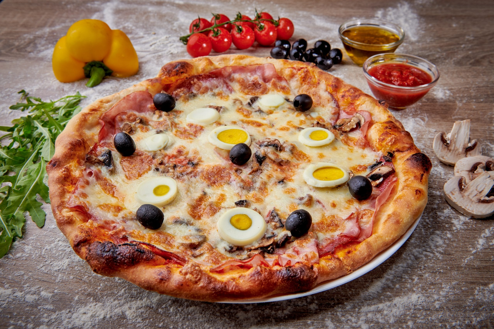

Pizza Recipe

Description:
Pizza is a popular Italian dish consisting of a usually round, flat base of leavened wheat-based dough topped with tomatoes, cheese, and often various other ingredients (such as anchovies, mushrooms, olives, vegetables, meat, etc.), which is then baked at a high temperature, traditionally in a wood-fired oven.
Ingredients:
- 2 cups all-purpose flour
- 1 packet (2 1/4 tsp) active dry yeast
- 1 tsp sugar
- 3/4 cup warm water
- 1 tsp salt
- 1 tbsp olive oil
- 1 cup pizza sauce
- 2 cups shredded mozzarella cheese
- Your choice of toppings (pepperoni, mushrooms, bell peppers, etc.)
Steps:
- In a bowl, mix warm water, sugar, and yeast. Let it sit for 5-10 minutes until frothy.
- Add flour, salt, and olive oil. Knead until smooth.
- Let the dough rise in a warm place for 1 hour or until doubled in size.
- Preheat the oven to 475°F (245°C).
- Roll out the dough on a floured surface to your desired thickness.
- Spread pizza sauce over the base, add cheese and toppings.
- Bake for 12-15 minutes or until the crust is golden brown.
- Let it cool for a few minutes before slicing and serving.
Go back to homepage